お米
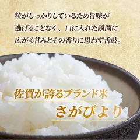
佐賀県上峰町
さがびより 5kg
5kg
寄付額5,000円2026年9月14日時点
レビューの要約
- 次の日にお弁当に入れて温め直してもべちゃっとしないし、粒がしっかりしてるのよ
- 炊き込みご飯にしても粒がちゃんと感じられたの。おまけの海苔もうれしかった
気になる声袋を開けたら白っぽい粒が多くて最初は気になったの。硬めが好きな彼は気に入ってた
寄付額・内容・受付状況はリンク先でご確認ください
ふるさと納税 / 2026.09.14
YouTubeの10分動画で紹介した返礼品21品です。楽天ふるさと納税のレビューをもとに、お米・お肉・海鮮・果物とスイーツに分けています。
21 ITEMS 動画で紹介したもの
寄付額・内容量・受付期間は2026年9月14日時点です。受付終了や内容の変更があります。
2026年10月から返礼品の基準が変わるため、内容が変わる・受付が終わることがあります。
白糠町のいくらは、2026年1月から原料の産地がロシア産に変わっています。レビューは変更前の時期のものを含みます。

佐賀県上峰町
5kg
寄付額5,000円2026年9月14日時点
レビューの要約
気になる声袋を開けたら白っぽい粒が多くて最初は気になったの。硬めが好きな彼は気に入ってた
寄付額・内容・受付状況はリンク先でご確認ください
石川県宝達志水町
5kg
寄付額10,000円2026年9月14日時点
レビューの要約
気になる声粘りが強めのお米だから、うちは水をいつもより少し控えめにして炊くようにしてる
寄付額・内容・受付状況はリンク先でご確認ください
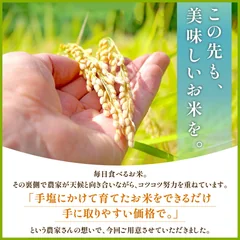
福岡県赤村
5kg
寄付額6,000円2026年9月14日時点
レビューの要約
気になる声6月に申し込んで届いたのが11月。発送の目安の連絡もなくて、待ってるあいだは不安だった
寄付額・内容・受付状況はリンク先でご確認ください
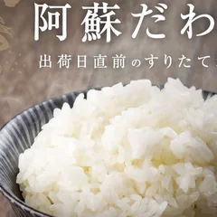
熊本県高森町
5kg
寄付額6,500円2026年9月14日時点
レビューの要約
気になる声粒は小さめで白っぽいのも混ざってた。でも、うちで食べる分には問題なかったよ
寄付額・内容・受付状況はリンク先でご確認ください
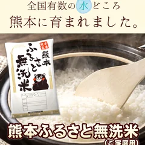
熊本県御船町
5kg
寄付額8,000円2026年9月14日時点
レビューの要約
気になる声箱を開けたら米袋が破れてて、お米が4分の1くらい出てたの。味はおいしかったけどね
寄付額・内容・受付状況はリンク先でご確認ください
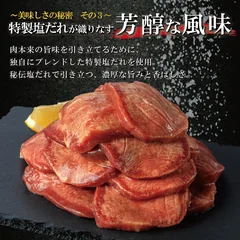
岩手県花巻市
500g
寄付額8,000円2026年9月14日時点
レビューの要約
気になる声小学生の子には焼くとかたかったみたい。残りは圧力鍋でシチューにしたらやわらかかった
寄付額・内容・受付状況はリンク先でご確認ください
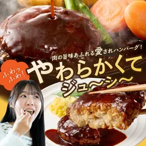
福岡県飯塚市
10個
寄付額10,000円2026年9月14日時点
レビューの要約
気になる声ソースは甘めで、子どもが好きな味。大人のわたしには少しくどく感じちゃったかな
寄付額・内容・受付状況はリンク先でご確認ください
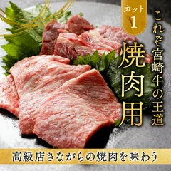
宮崎県都城市
500g
寄付額12,000円2026年9月14日時点
レビューの要約
気になる声1パックはやわらかかったけど、もう1つは筋が多くて焼肉には向かなかったの
寄付額・内容・受付状況はリンク先でご確認ください
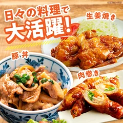
宮崎県宮崎市
2.1kg
寄付額13,000円2026年9月14日時点
レビューの要約
気になる声セットのハンバーグは煮込んだら子どもが苦手だったの。焼いただけなら食べてくれたよ
寄付額・内容・受付状況はリンク先でご確認ください
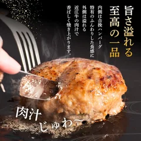
滋賀県竜王町
1kg
寄付額7,000円2026年9月14日時点
レビューの要約
気になる声焼くと脂がけっこう出てお皿が肉汁だらけになったの。脂が苦手な人は気をつけてね
寄付額・内容・受付状況はリンク先でご確認ください
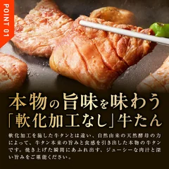
大阪府泉佐野市
計500g
寄付額8,000円2026年9月14日時点
レビューの要約
気になる声厚切りは子どもが噛み切れなくて、ハサミで切りながら食べてたの。薄切りのほうが食べやすいみたい
寄付額・内容・受付状況はリンク先でご確認ください
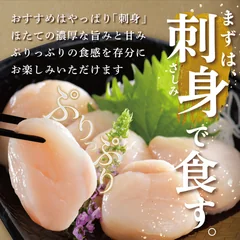
北海道別海町
400g
寄付額8,500円2026年9月14日時点
レビューの要約
気になる声生だと甘みが少し物足りなく感じたけど、炒め物やパエリアに使ったら重宝したのよね
寄付額・内容・受付状況はリンク先でご確認ください
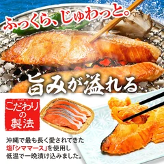
千葉県銚子市
約1.5kg
寄付額10,000円2026年9月14日時点
レビューの要約
気になる声袋の口が閉じてなくて、冷凍庫で散らばっちゃった。届いたらすぐ小分けがいいよ
寄付額・内容・受付状況はリンク先でご確認ください
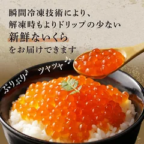
北海道白糠町
200g
寄付額16,000円2026年9月14日時点
レビューの要約
気になる声私には塩気がかなり強くて、ご飯に少しずつのせるくらいがちょうどよかったかな
寄付額・内容・受付状況はリンク先でご確認ください
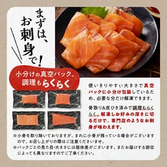
北海道白糠町
900g
寄付額15,000円2026年9月14日時点
レビューの要約
気になる声脂がすごく多くて、お刺身だと3切れで十分だったのよね。焼きも試してみるつもり
寄付額・内容・受付状況はリンク先でご確認ください
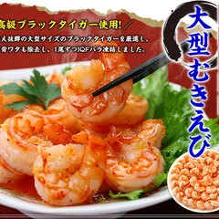
福井県敦賀市
1kg
寄付額12,000円2026年9月14日時点
レビューの要約
気になる声解凍したら水がけっこう出て、キッチンペーパーがびしょびしょになったのよね
寄付額・内容・受付状況はリンク先でご確認ください
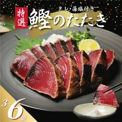
愛媛県愛南町
400g
寄付額5,000円2026年9月14日時点
レビューの要約
気になる声大きさは届くたびにばらつきがあって、小さいのばかりの時も。今回はいいサイズだったよ
寄付額・内容・受付状況はリンク先でご確認ください

山梨県富士吉田市
1kg
寄付額10,000円2026年9月14日時点
レビューの要約
気になる声10粒に1粒くらい酸っぱいのが混ざってて、甘さに差があったかな。見た目は大粒
寄付額・内容・受付状況はリンク先でご確認ください

和歌山県有田市
約5kg
寄付額10,000円2026年9月14日時点
レビューの要約
気になる声甘さは少し薄めに感じたけど、箱にはたくさん入ってたよ。量はしっかりあるの
寄付額・内容・受付状況はリンク先でご確認ください

福岡県小竹町
1000g
寄付額10,000円2026年9月14日時点
レビューの要約
気になる声4月に届いた分は甘さ控えめで酸味が勝ってたかな。自前の練乳をかけて食べたよ
寄付額・内容・受付状況はリンク先でご確認ください

北海道千歳市
2種セット
寄付額18,000円2026年9月14日時点
レビューの要約
気になる声思ったより早く届いて、冷凍庫をあけるのが大変。先に整理しておくといいよ
寄付額・内容・受付状況はリンク先でご確認ください
SOURCE & NOTES
2026年9月14日に確認したレビューです。